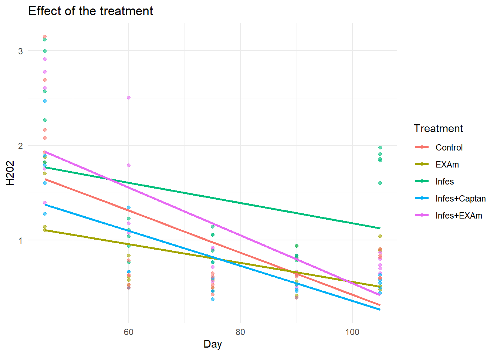
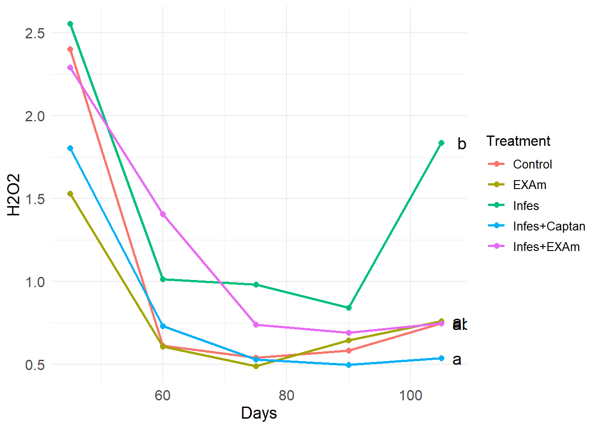

library(lme4)
library(lmerTest)
library(ggplot2)
library(emmeans)
library(ggsignif)
library(multcompView)
library(multcomp)
library(rstatix)
library(nlme)
library(dplyr)Document 5
Due to the bio marker assessments and non-enzymatic variables were taken over time, a repeated measures analysis can be performed.
Required libraries
Call the data
library(readxl)
df <- read_excel("DATA/tomato-clean.xlsx", sheet = 3)H2O2
Statistical analysis
Linear mixed model
?lmer
model <- lmer(H202 ~ Day * Treatment + (1 | Block), data = df)
summary(model)Linear mixed model fit by REML. t-tests use Satterthwaite's method [
lmerModLmerTest]
Formula: H202 ~ Day * Treatment + (1 | Block)
Data: df
REML criterion at convergence: 246.6
Scaled residuals:
Min 1Q Median 3Q Max
-1.9724 -0.7246 -0.1565 0.6752 2.8009
Random effects:
Groups Name Variance Std.Dev.
Block (Intercept) 0.0000 0.0000
Residual 0.2896 0.5382
Number of obs: 125, groups: Block, 5
Fixed effects:
Estimate Std. Error df t value Pr(>|t|)
(Intercept) 2.643345 0.395469 115.000000 6.684 8.75e-10 ***
Day -0.022225 0.005074 115.000000 -4.380 2.63e-05 ***
TreatmentEXAm -1.089112 0.559277 115.000000 -1.947 0.0539 .
TreatmentInfes -0.393035 0.559277 115.000000 -0.703 0.4836
TreatmentInfes+Captan -0.438713 0.559277 115.000000 -0.784 0.4344
TreatmentInfes+EXAm 0.428827 0.559277 115.000000 0.767 0.4448
Day:TreatmentEXAm 0.012249 0.007176 115.000000 1.707 0.0905 .
Day:TreatmentInfes 0.011476 0.007176 115.000000 1.599 0.1125
Day:TreatmentInfes+Captan 0.003750 0.007176 115.000000 0.523 0.6023
Day:TreatmentInfes+EXAm -0.003091 0.007176 115.000000 -0.431 0.6675
---
Signif. codes: 0 '***' 0.001 '**' 0.01 '*' 0.05 '.' 0.1 ' ' 1
Correlation of Fixed Effects:
(Intr) Day TrtEXA TrtmnI TrtI+C TI+EXA D:TEXA Dy:TrI D:TI+C
Day -0.962
TretmntEXAm -0.707 0.680
TretmntInfs -0.707 0.680 0.500
TrtmntInf+C -0.707 0.680 0.500 0.500
TrtmntI+EXA -0.707 0.680 0.500 0.500 0.500
Dy:TrtmnEXA 0.680 -0.707 -0.962 -0.481 -0.481 -0.481
Dy:TrtmntIn 0.680 -0.707 -0.481 -0.962 -0.481 -0.481 0.500
Dy:TrtmnI+C 0.680 -0.707 -0.481 -0.481 -0.962 -0.481 0.500 0.500
Dy:TrtI+EXA 0.680 -0.707 -0.481 -0.481 -0.481 -0.962 0.500 0.500 0.500
optimizer (nloptwrap) convergence code: 0 (OK)
boundary (singular) fit: see help('isSingular')Graphic
df$predicted <- predict(model)
ggplot(df, aes(x = Day, y = H202, color = Treatment)) +
geom_point(alpha = 0.6) +
geom_line(aes(y = predicted), size = 1) +
theme_minimal() +
labs(title = "Effect of the treatment",
x = "Day",
y = "H202")Warning: Using `size` aesthetic for lines was deprecated in ggplot2 3.4.0.
ℹ Please use `linewidth` instead.
Repeated measures
Fixed Effects:
H202 ~ Treatment * Dayincludes main effects forTreatmentandDayand their interaction.Random Effects:
random = ~1 | Block/Samplesspecifies a hierarchical random-effects structure:~1: Indicates random intercepts for each grouping level.Block/Samples: Models nested random effects:Block: Random intercepts for each block.Samples: Random intercepts nested withinBlock(e.g., multiple samples taken from each block).
library(emmeans)
modelo_repet <- lme(H202 ~ Treatment * Day, random = ~1 | Block/Samples, data = df)
modelo_repetLinear mixed-effects model fit by REML
Data: df
Log-restricted-likelihood: -123.2925
Fixed: H202 ~ Treatment * Day
(Intercept) TreatmentEXAm TreatmentInfes
2.643344560 -1.089111600 -0.393034640
TreatmentInfes+Captan TreatmentInfes+EXAm Day
-0.438712560 0.428827040 -0.022225376
TreatmentEXAm:Day TreatmentInfes:Day TreatmentInfes+Captan:Day
0.012248955 0.011476293 0.003749680
TreatmentInfes+EXAm:Day
-0.003090645
Random effects:
Formula: ~1 | Block
(Intercept)
StdDev: 2.42596e-05
Formula: ~1 | Samples %in% Block
(Intercept) Residual
StdDev: 1.305336e-05 0.5381648
Number of Observations: 125
Number of Groups:
Block Samples %in% Block
5 25 emm_treatments <- emmeans(modelo_repet, ~ Treatment)NOTE: Results may be misleading due to involvement in interactionscomparissons <- cld(emm_treatments, alpha=0.05, Letters=letters, adjust="tukey")Note: adjust = "tukey" was changed to "sidak"
because "tukey" is only appropriate for one set of pairwise comparisonsLettersabc <- comparissons$.group
Lettersabc[1] " a " " a " " a " " ab" " b"Significance:
emm_data <- as.data.frame(comparissons)
letters_df <- data.frame(Treatment = comparissons$Treatment,
Letters = comparissons$.group)
medias_df <- df %>%
group_by(Treatment, Day) %>%
summarise(H202_mean = mean(H202), .groups = "drop")
lastday <- medias_df %>%
filter(Day == max(medias_df$Day)) %>%
left_join(letters_df, by = "Treatment")
ggplot(medias_df, aes(x = Day, y = H202_mean, group = Treatment, color = Treatment)) +
geom_line(size = 1) +
geom_point(size = 2) +
geom_text(data = lastday,
aes(label = Letters, x = Day + 1, y = H202_mean),
hjust = 0, size = 5, inherit.aes = FALSE) +
labs(x = "Days",
y = "H2O2",
color = "Treatment") +
scale_color_discrete(name = "Treatment") +
theme_minimal() +
theme(axis.text = element_text(size = 12),
axis.title = element_text(size = 14),
legend.title = element_text(size = 12),
legend.text = element_text(size = 10))